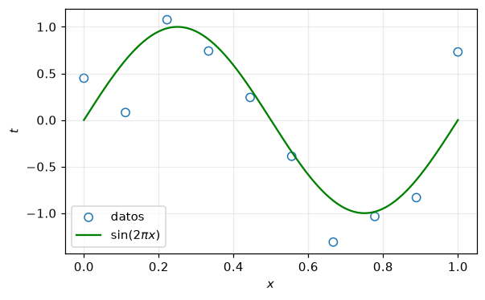
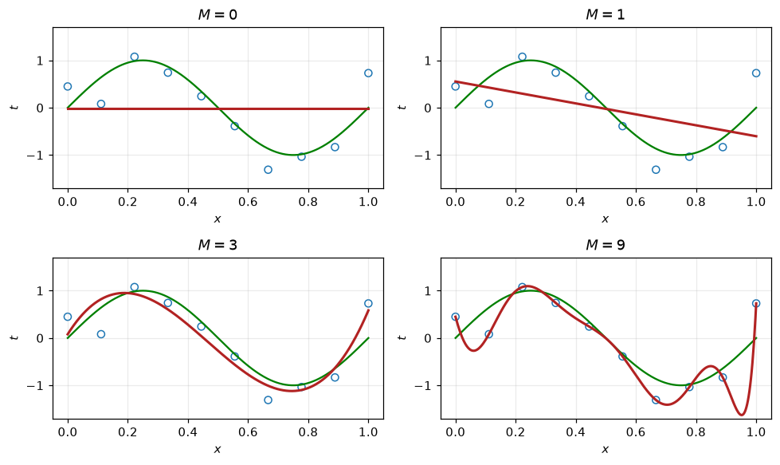
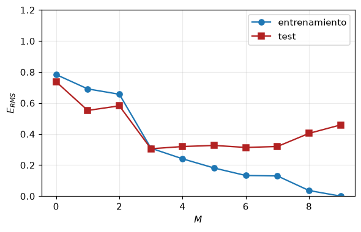
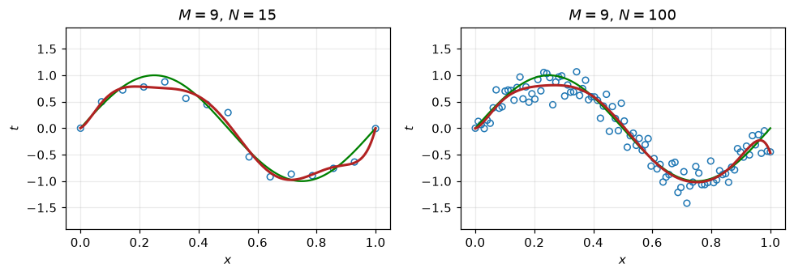
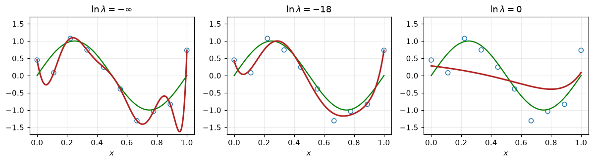
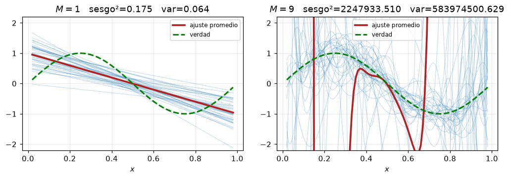
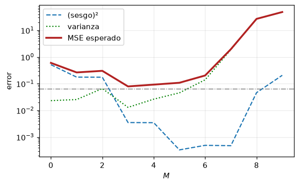
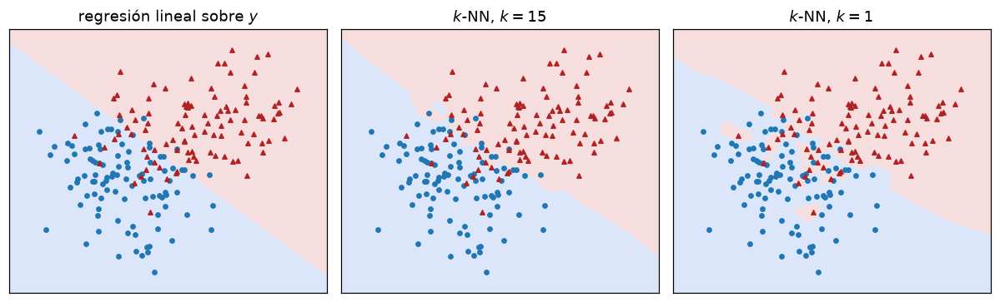
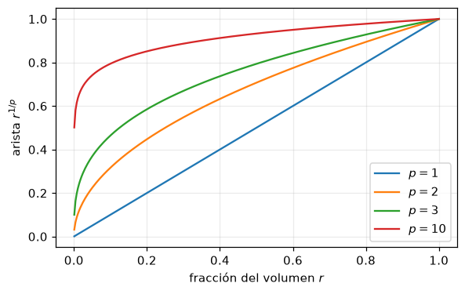
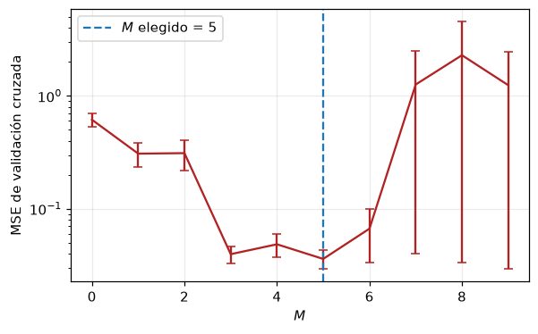

import numpy as np
import matplotlib.pyplot as plt
rng = np.random.default_rng(3)
plt.rcParams.update({"figure.figsize": (6, 3.6), "axes.grid": True,
"grid.alpha": 0.25, "figure.dpi": 110})Introducción al aprendizaje automático

Cuaderno de acompañamiento de la clase Introduction to Machine Learning.
Reproducimos con código los cuatro resultados centrales de la clase:
- El ajuste polinomial de Bishop (§1.1) y el sobreajuste.
- Error de entrenamiento frente a error de test.
- La descomposición sesgo–varianza medida por simulación.
- Selección de modelo por validación cruzada.
Notación. Seguimos a Bishop: \(\mathbf{x}_n\) entradas, \(t_n\) objetivos, \(N\) observaciones, \(\mathbf{w}\) parámetros, \(M\) orden del polinomio. Cuando usemos convenciones de Hastie, Tibshirani & Friedman (ESL) lo indicaremos explícitamente: allí los objetivos son \(y_i\), los coeficientes \(\beta\) y el número de entradas es \(p\).
1. Los datos
Bishop genera \(N\) puntos de \(\sin(2\pi x)\) contaminados con ruido gaussiano:
\[t_n = \sin(2\pi x_n) + \varepsilon_n, \qquad \varepsilon_n \sim \mathcal{N}(0, \sigma^2)\]
La función \(\sin(2\pi x)\) es la que querríamos recuperar; el modelo nunca la ve.
def genera_datos(N, sigma=0.22, rng=rng, equiespaciado=True):
"""Genera N pares (x, t) del modelo t = sin(2*pi*x) + ruido."""
x = np.linspace(0, 1, N) if equiespaciado else np.sort(rng.uniform(0, 1, N))
t = np.sin(2 * np.pi * x) + rng.normal(0, sigma, N)
return x, t
N = 10
x, t = genera_datos(N, rng=np.random.default_rng(3))
xx = np.linspace(0, 1, 400)
plt.scatter(x, t, facecolors="none", edgecolors="tab:blue", s=45, label="datos")
plt.plot(xx, np.sin(2 * np.pi * xx), color="green", label=r"$\sin(2\pi x)$")
plt.xlabel("$x$"); plt.ylabel("$t$"); plt.legend(); plt.show()
2. Ajuste polinomial por mínimos cuadrados
El modelo es
\[y(x, \mathbf{w}) = \sum_{j=0}^{M} w_j x^j\]
que es no lineal en \(x\) pero lineal en \(\mathbf{w}\): por eso los mínimos cuadrados tienen solución cerrada. La matriz de diseño \(\boldsymbol{\Phi}\) tiene entradas \(\Phi_{nj} = x_n^{\,j}\) y la solución es \(\mathbf{w} = (\boldsymbol{\Phi}^{\top}\boldsymbol{\Phi})^{-1}\boldsymbol{\Phi}^{\top}\mathbf{t}\).
Usamos lstsq, que resuelve el problema por SVD y es numéricamente estable incluso cuando \(\boldsymbol{\Phi}^{\top}\boldsymbol{\Phi}\) está mal condicionada (lo estará para \(M = 9\)).
def diseno(x, M):
"""Matriz de diseño polinomial de orden M (N x (M+1))."""
return np.vander(x, M + 1, increasing=True)
def ajusta_polinomio(x, t, M, lam=0.0):
"""Mínimos cuadrados regularizados (lam=0 -> mínimos cuadrados ordinarios)."""
Phi = diseno(x, M)
if lam == 0.0:
return np.linalg.lstsq(Phi, t, rcond=None)[0]
A = Phi.T @ Phi + lam * np.eye(Phi.shape[1])
return np.linalg.solve(A, Phi.T @ t)
fig, axes = plt.subplots(2, 2, figsize=(9, 5.4))
for ax, M in zip(axes.ravel(), [0, 1, 3, 9]):
w = ajusta_polinomio(x, t, M)
ax.plot(xx, np.sin(2 * np.pi * xx), color="green")
ax.plot(xx, diseno(xx, M) @ w, color="firebrick", lw=2)
ax.scatter(x, t, facecolors="none", edgecolors="tab:blue", s=35)
ax.set_title(f"$M = {M}$"); ax.set_ylim(-1.7, 1.7)
ax.set_xlabel("$x$"); ax.set_ylabel("$t$")
fig.tight_layout(); plt.show()
\(M = 0\) y \(M = 1\) subajustan: el modelo es demasiado rígido. \(M = 3\) recupera casi exactamente la sinusoide. \(M = 9\) pasa por los diez puntos y oscila salvajemente entre ellos: sobreajuste.
Y sin embargo \(M = 9\) tiene menor error de entrenamiento que \(M = 3\). De hecho, cero.
3. El síntoma: coeficientes enormes
La tabla 1.1 de Bishop. Observe la magnitud y los signos alternados en la columna \(M = 9\): los coeficientes se cancelan entre sí para hacer pasar la curva por cada punto.
import pandas as pd
tabla = {}
for M in [0, 1, 3, 9]:
w = ajusta_polinomio(x, t, M)
tabla[f"M = {M}"] = pd.Series(w, index=[f"w{j}" for j in range(M + 1)])
pd.set_option("display.float_format", lambda v: f"{v:,.2f}")
pd.DataFrame(tabla)| M = 0 | M = 1 | M = 3 | M = 9 | |
|---|---|---|---|---|
| w0 | -0.02 | 0.55 | 0.08 | 0.45 |
| w1 | NaN | -1.16 | 10.12 | -23.31 |
| w2 | NaN | NaN | -33.66 | 136.58 |
| w3 | NaN | NaN | 24.04 | 1,799.17 |
| w4 | NaN | NaN | NaN | -19,545.95 |
| w5 | NaN | NaN | NaN | 77,455.55 |
| w6 | NaN | NaN | NaN | -160,007.04 |
| w7 | NaN | NaN | NaN | 182,917.88 |
| w8 | NaN | NaN | NaN | -109,596.20 |
| w9 | NaN | NaN | NaN | 26,863.60 |
Si el sobreajuste se manifiesta como coeficientes grandes, una cura natural es penalizar coeficientes grandes: eso es ridge regression.
4. Error de entrenamiento frente a error de test
\[E_{\mathrm{RMS}} = \sqrt{\frac{1}{N}\sum_{n=1}^{N}\{y(x_n,\mathbf{w}) - t_n\}^2}\]
El error de entrenamiento decrece de forma monótona en \(M\). El de test baja, alcanza un mínimo y explota. La brecha entre ambos es el precio de usar los mismos datos para ajustar y para evaluar.
def rms(pred, obj):
return np.sqrt(np.mean((pred - obj) ** 2))
rng_test = np.random.default_rng(99)
x_te = rng_test.uniform(0, 1, 500)
t_te = np.sin(2 * np.pi * x_te) + rng_test.normal(0, 0.22, x_te.size)
Ms = np.arange(0, 10)
e_tr = [rms(diseno(x, M) @ ajusta_polinomio(x, t, M), t) for M in Ms]
e_te = [rms(diseno(x_te, M) @ ajusta_polinomio(x, t, M), t_te) for M in Ms]
plt.plot(Ms, e_tr, "o-", label="entrenamiento")
plt.plot(Ms, e_te, "s-", color="firebrick", label="test")
plt.xlabel("$M$"); plt.ylabel("$E_{RMS}$"); plt.ylim(0, 1.2)
plt.legend(); plt.show()
print("M que minimiza el error de test:", Ms[int(np.argmin(e_te))])
M que minimiza el error de test: 35. Más datos curan el sobreajuste
El sobreajuste no es una propiedad del modelo por sí solo, sino del modelo en relación con la cantidad de datos. El mismo polinomio de grado 9 se comporta bien con \(N = 100\).
fig, axes = plt.subplots(1, 2, figsize=(9, 3.2))
for ax, Ni in zip(axes, [15, 100]):
xi, ti = genera_datos(Ni, rng=np.random.default_rng(7))
w = ajusta_polinomio(xi, ti, 9)
ax.plot(xx, np.sin(2 * np.pi * xx), color="green")
ax.plot(xx, diseno(xx, 9) @ w, color="firebrick", lw=2)
ax.scatter(xi, ti, facecolors="none", edgecolors="tab:blue", s=25)
ax.set_title(f"$M = 9$, $N = {Ni}$"); ax.set_ylim(-1.9, 1.9)
ax.set_xlabel("$x$"); ax.set_ylabel("$t$")
fig.tight_layout(); plt.show()
6. Regularización: un primer vistazo
Cuando no se pueden conseguir más datos, se restringen los parámetros. Añadimos un término de penalización al error:
\[\widetilde{E}(\mathbf{w}) = \frac{1}{2}\sum_{n=1}^{N}\{y(x_n,\mathbf{w}) - t_n\}^2 + \frac{\lambda}{2}\|\mathbf{w}\|_2^2\]
Con el mismo modelo de grado 9, un \(\lambda\) moderado recupera casi exactamente la sinusoide. Demasiado \(\lambda\) arrastra el ajuste hacia cero y subajusta.
fig, axes = plt.subplots(1, 3, figsize=(11, 3.1))
for ax, loglam in zip(axes, [-np.inf, -18, 0]):
lam = 0.0 if np.isneginf(loglam) else np.exp(loglam)
w = ajusta_polinomio(x, t, 9, lam=lam)
ax.plot(xx, np.sin(2 * np.pi * xx), color="green")
ax.plot(xx, diseno(xx, 9) @ w, color="firebrick", lw=2)
ax.scatter(x, t, facecolors="none", edgecolors="tab:blue", s=35)
etiq = r"$\ln\lambda = -\infty$" if np.isneginf(loglam) else rf"$\ln\lambda = {loglam:g}$"
ax.set_title(etiq); ax.set_ylim(-1.7, 1.7); ax.set_xlabel("$x$")
fig.tight_layout(); plt.show()
Y el efecto sobre los coeficientes, que es lo que realmente estamos controlando:
filas = {}
for loglam in [-np.inf, -18, 0]:
lam = 0.0 if np.isneginf(loglam) else np.exp(loglam)
w = ajusta_polinomio(x, t, 9, lam=lam)
nombre = "ln λ = -inf" if np.isneginf(loglam) else f"ln λ = {loglam:g}"
filas[nombre] = pd.Series(w, index=[f"w{j}" for j in range(10)])
pd.DataFrame(filas)| ln λ = -inf | ln λ = -18 | ln λ = 0 | |
|---|---|---|---|
| w0 | 0.45 | 0.43 | 0.28 |
| w1 | -23.31 | -14.63 | -0.52 |
| w2 | 136.58 | 164.58 | -0.46 |
| w3 | 1,799.17 | -531.58 | -0.28 |
| w4 | -19,545.95 | 591.66 | -0.10 |
| w5 | 77,455.55 | -56.59 | 0.05 |
| w6 | -160,007.04 | -221.13 | 0.16 |
| w7 | 182,917.88 | 2.90 | 0.25 |
| w8 | -109,596.20 | 54.70 | 0.32 |
| w9 | 26,863.60 | 10.39 | 0.38 |
7. La descomposición sesgo–varianza, medida
\[\mathbb{E}_{\mathcal{D}}\big[(t - y(x;\mathcal{D}))^2\big] = (\text{sesgo})^2 + \text{varianza} + \sigma^2\]
La esperanza es sobre conjuntos de entrenamiento. La estimamos repitiendo el experimento completo muchas veces con datos frescos.
def experimento_sesgo_varianza(M, n_rep=200, N=12, sigma=0.25, semilla=0):
"""Ajusta n_rep polinomios de orden M, cada uno con su propio conjunto de datos."""
r = np.random.default_rng(semilla)
grid = np.linspace(0.02, 0.98, 100)
verdad = np.sin(2 * np.pi * grid)
preds = np.empty((n_rep, grid.size))
for k in range(n_rep):
xi = np.sort(r.uniform(0, 1, N))
ti = np.sin(2 * np.pi * xi) + r.normal(0, sigma, N)
preds[k] = diseno(grid, M) @ ajusta_polinomio(xi, ti, M)
sesgo2 = np.mean((preds.mean(0) - verdad) ** 2)
varianza = np.mean(preds.var(0))
return grid, verdad, preds, sesgo2, varianza
fig, axes = plt.subplots(1, 2, figsize=(9.5, 3.4))
for ax, M in zip(axes, [1, 9]):
grid, verdad, preds, s2, v = experimento_sesgo_varianza(M, n_rep=40)
for p in preds:
ax.plot(grid, p, color="tab:blue", lw=0.6, alpha=0.3)
ax.plot(grid, preds.mean(0), color="firebrick", lw=2.4, label="ajuste promedio")
ax.plot(grid, verdad, color="green", lw=2, ls="--", label="verdad")
ax.set_title(f"$M={M}$ sesgo²={s2:.3f} var={v:.3f}")
ax.set_ylim(-2.2, 2.2); ax.set_xlabel("$x$"); ax.legend(fontsize=8)
fig.tight_layout(); plt.show()
A la izquierda (\(M=1\)): todos los ajustes son casi la misma recta — varianza baja — pero su promedio está lejos de la verdad: eso es sesgo.
A la derecha (\(M=9\)): los ajustes individuales van por todas partes — varianza alta — pero su promedio sigue bien a la sinusoide: sesgo bajo.
Ninguno de los dos es bueno. Usted nunca obtiene el promedio, obtiene una de esas curvas.
# Barremos M con N = 25 (con N = 12 los polinomios de grado alto son tan inestables
# que la varianza domina desde M = 2 y la curva no llega a mostrar la U).
Ms = np.arange(0, 10)
sesgos, varianzas = [], []
for M in Ms:
_, _, _, s2, v = experimento_sesgo_varianza(M, n_rep=300, N=25)
sesgos.append(s2); varianzas.append(v)
sesgos, varianzas = np.array(sesgos), np.array(varianzas)
sigma2 = 0.25 ** 2
plt.plot(Ms, sesgos, "--", label="(sesgo)²")
plt.plot(Ms, varianzas, ":", color="green", label="varianza")
plt.plot(Ms, sesgos + varianzas + sigma2, color="firebrick", lw=2.4, label="MSE esperado")
plt.axhline(sigma2, color="gray", lw=1, ls="-.")
plt.xlabel("$M$"); plt.ylabel("error"); plt.yscale("log"); plt.legend(); plt.show()
print("M óptimo según la simulación:", Ms[int(np.argmin(sesgos + varianzas))])
M óptimo según la simulación: 38. Vecinos más cercanos y la maldición de la dimensionalidad
\(k\)-NN es la aproximación más directa posible al predictor óptimo \(\mathbb{E}[t \mid \mathbf{x}]\): reemplaza la esperanza condicional por un promedio sobre los \(k\) puntos más cercanos. Aquí usamos notación ESL (\(y_i\), \(p\) entradas).
from sklearn.neighbors import KNeighborsClassifier
from sklearn.linear_model import LinearRegression
r = np.random.default_rng(11)
c0 = r.multivariate_normal([0, 0], np.eye(2), 10)
c1 = r.multivariate_normal([2.2, 2.2], np.eye(2), 10)
X0 = c0[r.integers(0, 10, 100)] + r.normal(0, 0.55, (100, 2))
X1 = c1[r.integers(0, 10, 100)] + r.normal(0, 0.55, (100, 2))
X = np.vstack([X0, X1]); y = np.r_[np.zeros(100), np.ones(100)]
gx, gy = np.meshgrid(np.linspace(X[:, 0].min() - .6, X[:, 0].max() + .6, 250),
np.linspace(X[:, 1].min() - .6, X[:, 1].max() + .6, 250))
G = np.c_[gx.ravel(), gy.ravel()]
fig, axes = plt.subplots(1, 3, figsize=(11, 3.4))
for ax, (titulo, mdl) in zip(axes, [("regresión lineal sobre $y$", LinearRegression()),
("$k$-NN, $k=15$", KNeighborsClassifier(15)),
("$k$-NN, $k=1$", KNeighborsClassifier(1))]):
mdl.fit(X, y)
Z = mdl.predict(G).reshape(gx.shape)
ax.contourf(gx, gy, (Z > 0.5).astype(float), levels=[-.5, .5, 1.5],
colors=["#dbe6fb", "#f6dede"])
ax.scatter(*X0.T, s=12, color="tab:blue")
ax.scatter(*X1.T, s=12, color="firebrick", marker="^")
ax.set_title(titulo); ax.set_xticks([]); ax.set_yticks([]); ax.grid(False)
fig.tight_layout(); plt.show()
\(k\) pequeño = alta complejidad = alta varianza. \(k\) grande = baja complejidad = alto sesgo. El número efectivo de parámetros de \(k\)-NN es aproximadamente \(N/k\).
La maldición de la dimensionalidad (ESL §2.5) explica por qué los métodos basados en localidad fracasan en dimensión alta: para capturar una fracción \(r\) del hipercubo unitario en \(p\) dimensiones, un subcubo necesita arista \(e_p(r) = r^{1/p}\).
r_frac = np.linspace(0.001, 1, 300)
for p in [1, 2, 3, 10]:
plt.plot(r_frac, r_frac ** (1 / p), label=f"$p={p}$")
plt.xlabel("fracción del volumen $r$"); plt.ylabel("arista $r^{1/p}$")
plt.legend(); plt.show()
for p in [1, 2, 3, 10]:
print(f"p = {p:2d}: para capturar el 1% del volumen hace falta "
f"el {100 * 0.01 ** (1 / p):.1f}% del rango de cada coordenada")
p = 1: para capturar el 1% del volumen hace falta el 1.0% del rango de cada coordenada
p = 2: para capturar el 1% del volumen hace falta el 10.0% del rango de cada coordenada
p = 3: para capturar el 1% del volumen hace falta el 21.5% del rango de cada coordenada
p = 10: para capturar el 1% del volumen hace falta el 63.1% del rango de cada coordenada9. Selección de modelo por validación cruzada
En la práctica no tenemos un conjunto de test enorme para elegir \(M\). Usamos validación cruzada de \(K\) pliegues (ESL §7.10): partimos \(\mathcal{D}\) en \(K\) bloques, entrenamos con \(K-1\) y validamos en el que queda fuera.
El error más común: cualquier preprocesamiento que mire los objetivos —selección de variables, estandarización usando todos los datos— debe ocurrir dentro del pliegue.
from sklearn.model_selection import KFold
x_cv, t_cv = genera_datos(40, rng=np.random.default_rng(21), equiespaciado=False)
kf = KFold(n_splits=10, shuffle=True, random_state=0)
Ms = np.arange(0, 10)
cv_media, cv_se = [], []
for M in Ms:
errores = []
for tr, va in kf.split(x_cv):
w = ajusta_polinomio(x_cv[tr], t_cv[tr], M)
errores.append(np.mean((diseno(x_cv[va], M) @ w - t_cv[va]) ** 2))
errores = np.array(errores)
cv_media.append(errores.mean())
cv_se.append(errores.std(ddof=1) / np.sqrt(len(errores)))
cv_media, cv_se = np.array(cv_media), np.array(cv_se)
plt.errorbar(Ms, cv_media, yerr=cv_se, color="firebrick", capsize=3)
plt.axvline(Ms[int(np.argmin(cv_media))], ls="--", color="tab:blue",
label=f"$M$ elegido = {Ms[int(np.argmin(cv_media))]}")
plt.xlabel("$M$"); plt.ylabel("MSE de validación cruzada")
plt.yscale("log"); plt.legend(); plt.show()
10. Ejercicios
Ruido. Repita la sección 4 con \(\sigma = 0.05\) y con \(\sigma = 0.5\). ¿Cómo se desplaza el \(M\) óptimo? Explique el resultado con la descomposición sesgo–varianza.
Base de funciones. Sustituya la base polinomial por gaussianas \(\phi_j(x) = \exp\{-(x-\mu_j)^2/2s^2\}\) con \(\mu_j\) equiespaciados en \([0,1]\). ¿Cambia el diagnóstico de sobreajuste? ¿Qué papel juega \(s\)?
Pérdida robusta. Añada tres valores atípicos al conjunto de entrenamiento y ajuste con pérdida cuadrática y con pérdida absoluta (
scipy.optimize.minimize). Compare.Fuga de información. Estandarice
x_cvusando todos los datos antes de partir en pliegues, y luego hágalo correctamente dentro de cada pliegue. Compare las curvas de CV. ¿En qué dirección se sesga la estimación?Regla de un error estándar. Modifique la sección 9 para elegir el \(M\) más pequeño cuyo error de CV esté dentro de un error estándar del mínimo. ¿Qué modelo obtiene?